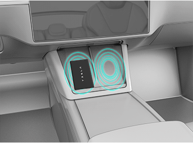
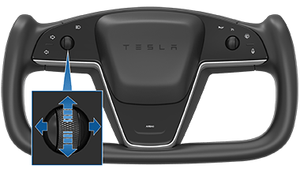

When you open a door to enter Model S, touchscreen powers on and you can operate all controls. To shift Model S, press the brake pedal and swipe up for Drive or down for Reverse on the touchscreen's drive mode strip (see Shifting).
If Auto Shift out of Park is enabled, Model S automatically selects Drive or Reverse. Pressing the brake pedal shifts the vehicle into the selected drive mode displayed on the instrument panel (provided the driver's door is closed and the driver's seat belt is buckled), and pressing the accelerator moves the vehicle in that direction.
Before accelerating when Auto Shift out of Park is enabled, check the instrument panel to make sure that Model S has shifted into the drive mode you want (Drive or Reverse). If the selection is not correct, or if Auto Shift out of Park is not enabled, swipe up for Drive or down for Reverse on the touchscreen's drive mode strip to choose a new drive mode. See Shifting.
If Model S does not detect a key when you press the brake (a phone key is not detected or two minutes have passed since you used the key card), the touchscreen displays a message telling you that driving requires authentication. If you see this message, place the key card in either phone dock where the RFID transmitter can read it. The two-minute authentication period restarts and you can start Model S by pressing the brake pedal.
A number of factors can affect whether Model S can detect a phone key (for example, the device's battery is low or dead and is no longer able to communicate using Bluetooth). Always keep your phone key or a key card with you. After driving, your key is needed to restart Model S after it powers off. And when you leave Model S, you must bring your key with you to lock Model S, either manually or automatically.
Depending on options purchased, you may have either a steering yoke or a steering wheel: the design may differ but the function is the same. To adjust the steering yoke (or steering wheel), touch Controls and touch the Steering icon. Use the left scroll button on the steering yoke (or steering wheel) to move the steering yoke (or steering wheel) to the desired position:
You can also customize what you want the left scroll button to control, such as Climate or Dashcam status. To customize, hold down the left scroll button and navigate the menu on the instrument cluster.
